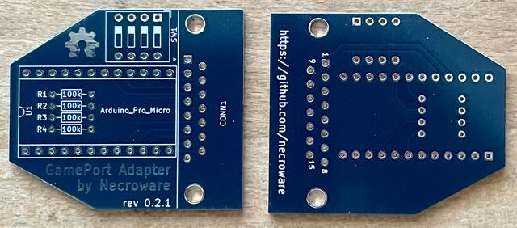

Die Platine wurde vom Originalautor getestet.

8 Stück verfügbar.
Mit diesem Adapter kann man PC GamePort Joysticks an den USB Port eines Computers anschließen.
| Komponente | Anzahl | Preis | Anbieter |
| Platine | 1 | €1.00 | |
| 100kΩ Widerstand | 4 | €0.16 | Reichelt |
| 1x12 Stiftleiste | 2 | — | |
| 4xDIP Schalter | 1 | €0.20 | Reichelt |
| 90° D-Sub-15 Buchse | 1 | €0.48 | Reichelt |
| Arduino Pro Micro ATmega32U4 16MHz 5V | 1 | — | |
| nur Platine | €1.00 | ||
| Teilbausatz | €1.84 |